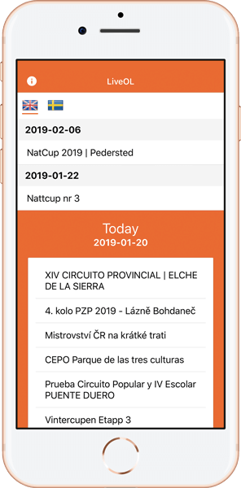

LiveOL
LiveOL is an app that displays orienteering-results live, built upon liveresultat.orientering.se. You get the results conveniently on your phone or tablet packaged in a neat interface. The app is made by Ludvig Larsendahl and the code is Open Source on GitHub (search LiveOL).